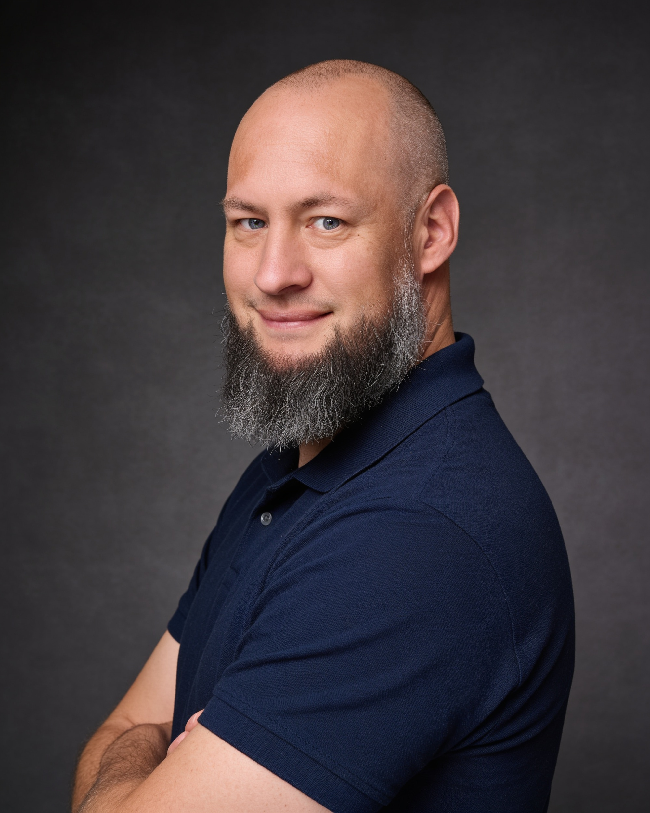

Umschüler zum Fachinformatiker für Anwendungsentwicklung. Mit über 20 Jahren praktischer Erfahrung im Handwerk bringe ich eine ausgeprägte Problemlösungskompetenz und ein tiefes Verständnis für stabile System-Infrastrukturen in die Softwareentwicklung ein.

Nach über 20 Jahren im Handwerk (Produktion und Montage) habe ich im September 2025 den Schritt gewagt, meine lebenslange IT-Leidenschaft zum Beruf zu machen. Ich absolviere derzeit eine strukturierte, IHK-konforme Umschulung zum Fachinformatiker für Anwendungsentwicklung bei der WBS Training SE.
Warum der Wechsel? Ich liebe es, Dinge von Grund auf zu erschaffen, komplexe Systeme zu durchdringen und Fehler systematisch zu beheben. Im Handwerk habe ich gelernt, dass man Probleme pragmatisch anpackt und erst aufgibt, wenn die Lösung absolut stabil steht. Genau diese anpackende, zielorientierte Mentalität bringe ich in die Softwareentwicklung ein. Wenn ein Code nicht läuft, fummle ich mich so lange durch Dokumentationen und Logfiles, bis der Fehler behoben ist.
Mein Ziel ist eine langfristige Karriere als Entwickler in meiner Heimatregion Windeck – um nicht nur meinen Traum zu verwirklichen, sondern auch um meinem Sohn zu beweisen, dass es nie zu spät ist, sich beruflich neu zu erfinden und für seine Ziele zu kämpfen.
Über 20 Jahre Arbeitsroutine bedeuten Zuverlässigkeit, Teamfähigkeit, Belastbarkeit und schnelles Mitdenken im Betrieb.
Egal ob Hardware, Linux-Server oder Java-Ausnahmen – ich analysiere logisch und löse Probleme eigenständig.
Solides theoretisches und praktisches Fundament in der objektorientierten Softwareentwicklung.
Erfahrung im Aufsetzen und der Administration eigener Serverumgebungen und Systemintegration.
Einsatz moderner Entwicklerwerkzeuge für effiziente Programmierung und Releasing.
Entwicklung eines eigenen, funktionalen Spigot-Plugins zur Implementierung neuer Spielmechaniken auf einem privaten Minecraft-Server. Umsetzen von sauberem objektorientierten Code, Event-Handling und Datenspeicherung.
Eigenständiger Aufbau, Konfiguration und Wartung eines lokalen Linux-Servers headless über SSH zur Haltung verschiedener Netzwerkdienste wie Jellyfin-Medienserver und Minecraft-Server.
Konzeption und Umsetzung einer mobilen Android-Lern-App zur Vorbereitung auf den EU-Drohnenführerschein. Das Projekt kombinierte moderne, KI-gestützte Codegenerierung mit nativem Android SDK.
Mein strukturierter IHK-Umschulungs-Fahrplan bei der WBS Training SE (Einstieg Sept. 2025 – Abschluss Sept. 2027)
Einführung in die Anwendungsentwicklung, Hardware-Grundlagen, Netzwerkinfrastrukturen, Windows & Linux Betriebssysteme und strukturierte Softwareentwicklung.
BestandenEinstieg in Java und prozedurale Programmierung, Datenbankdesign und Abfragen mit SQL (Datenbanken I).
BestandenObjektorientierte Programmierung in Java, Datenmodellierung mit UML, Grundlagen von Web-Anwendungen (HTML5/CSS3/PHP).
BestandenFortgeschrittenes Java, Arbeit mit Datenbankverbindungen (JDBC), Dateiverarbeitung und Streams sowie fortgeschrittene Entwicklungs-Werkzeuge.
AktuellPraktischer Einsatz im Partnerbetrieb. Ziel ist die Integration in den laufenden Entwicklungs-Workflow, Mitarbeit an echten Projekten und Ausarbeitung des IHK-Abschlussprojektes.
Gesucht!Umgang mit Git-Pipelines (CI/CD), modernen JavaScript-Frameworks (React/Vue), Microservices sowie intensive IHK-Prüfungsvorbereitung und mündliche Prüfung.
GeplantIch freue mich über Anfragen für ein persönliches Kennenlernen oder Vorstellungsgespräch für mein anstehendes Betriebspraktikum.
51570 Windeck, Nordrhein-Westfalen
Da es sich um eine statische Website handelt, können Sie mich am besten direkt per E-Mail kontaktieren. Klicken Sie einfach auf den Button, um Ihr E-Mail-Programm zu öffnen:
E-Mail an mich schreiben